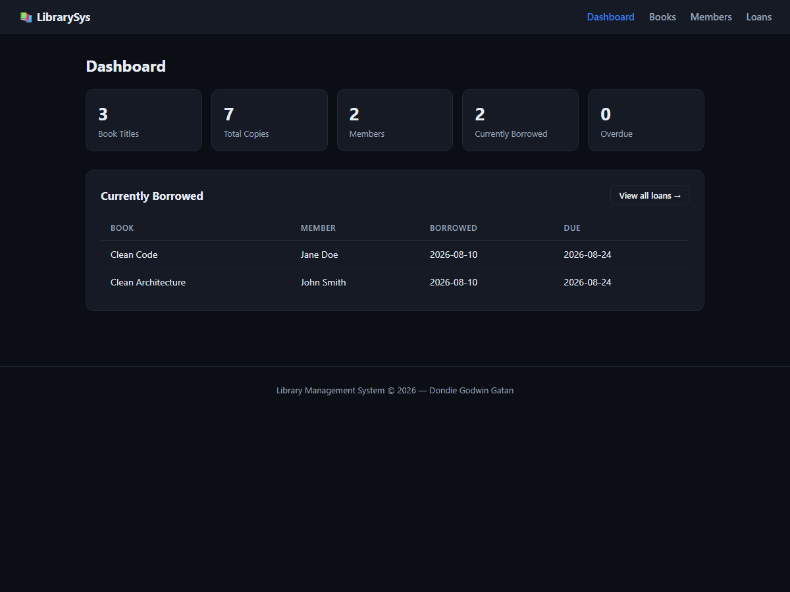
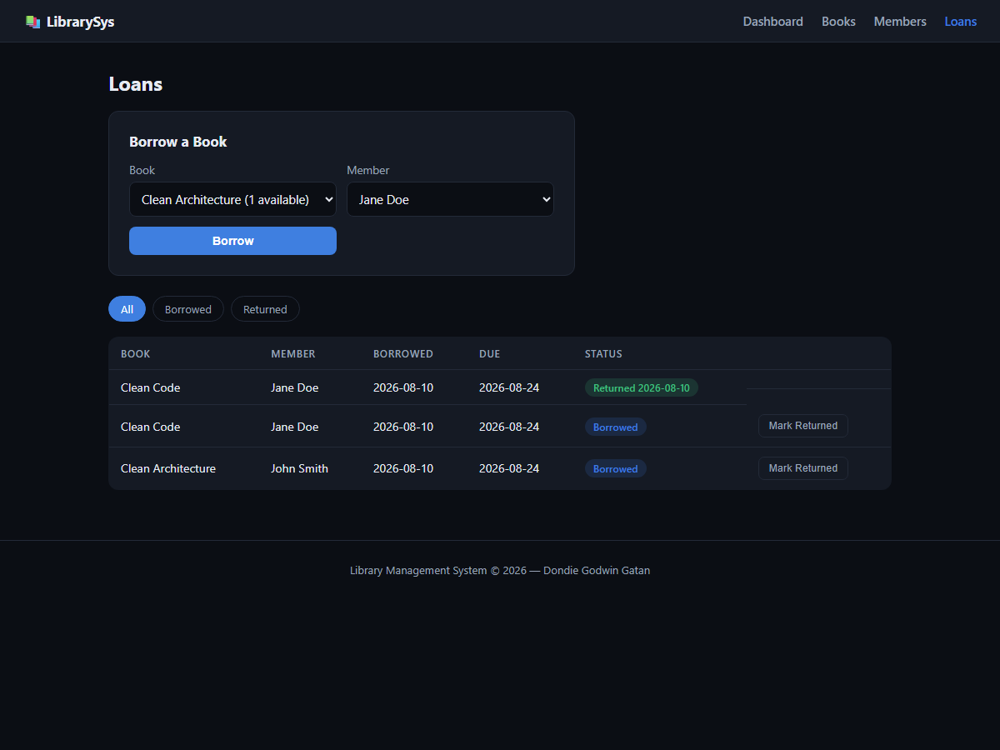
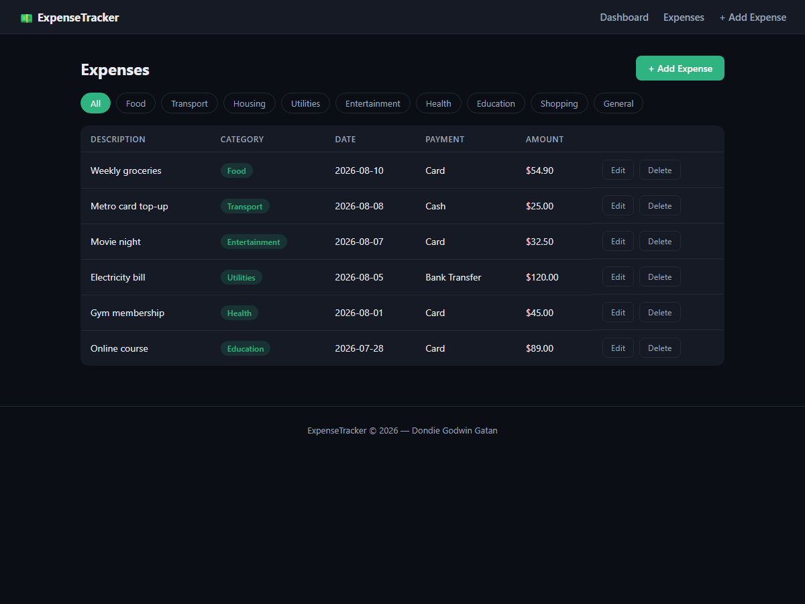

I build full-stack apps that turn messy real-world data into something useful.
Final-year Software Engineering student focused on full-stack web development,
NLP, and applied machine learning. My undergraduate project, Smart Resume Analyser,
parses real resume documents with OCR and NLP to score and give feedback on them —
end to end, from upload to database to dashboard.
A full-stack Flask web application that takes a candidate's PDF or scanned-image resume,
extracts its text with OCR and PDF parsing, and analyses it with NLP to produce a scored,
section-by-section breakdown — skills, education, experience, and formatting — with an
ATS-compatibility check and concrete suggestions for improvement. It also matches a resume
against a pasted job description, generates personalised career feedback, and includes a
guided resume builder and an analytics dashboard summarising every resume analysed so far.
A Flask app for running a small library: manage the book catalogue and member
roster, then check books in and out through a dedicated loans workflow that
keeps available-copy counts and due dates consistent automatically.

Dashboard — live stats and active loans

Borrow / return workflow
Full CRUD on books and members, each with live search
Borrowing decrements available copies and creates a loan record; returning reverses it
A book can't be borrowed once its available copies reach zero
Dashboard tracks titles, total copies, members, active loans, and overdue loans
Loan list filterable by status, with overdue rows visually flagged
PythonFlaskSQLiteJinja2HTML/CSS
Expense Tracker
C# / ASP.NET Core MVC expense manager with EF Core
A personal expense tracker built in C# on ASP.NET Core MVC with Entity Framework
Core against SQL Server — full CRUD over logged expenses, category filtering, and
a dashboard that rolls everything up into totals and a spend-by-category breakdown.
Dashboard — totals and category breakdown

Expense list with category filters
Create, edit, and delete expenses with server-side model validation
Filter the expense list by category
Dashboard aggregates total spent, this month's spend, and a per-category breakdown
Code-First EF Core migrations against SQL Server, applied automatically on startup
A task manager built to be a clean, complete demonstration of CRUD fundamentals:
an Express REST API backed by SQLite, with server-side validation on every write,
and a dependency-free HTML/CSS/JS frontend that consumes the API directly —
no framework, no build step.
An end-to-end machine learning analysis of the IBM HR Employee Attrition dataset: cleaning
and transforming raw HR records, handling class imbalance with SMOTE, and training and
comparing three classifiers to predict which employees are at risk of leaving. The notebook
goes beyond model accuracy to interpret why — surfacing the strongest attrition
drivers and translating them into concrete retention recommendations.
Data cleaning: median imputation, duplicate removal, IQR-based outlier detection
Feature encoding and scaling, with SMOTE applied to correct class imbalance
Trained and compared Logistic Regression, Decision Tree, and Random Forest classifiers
Evaluated on accuracy, sensitivity, specificity, precision, F1, and ROC-AUC, with ROC curves plotted for all three
Random Forest feature importance identified overtime, income, job satisfaction, and work-life balance as the top attrition drivers
Translated model findings into risk scoring (Low/Medium/High) and business recommendations